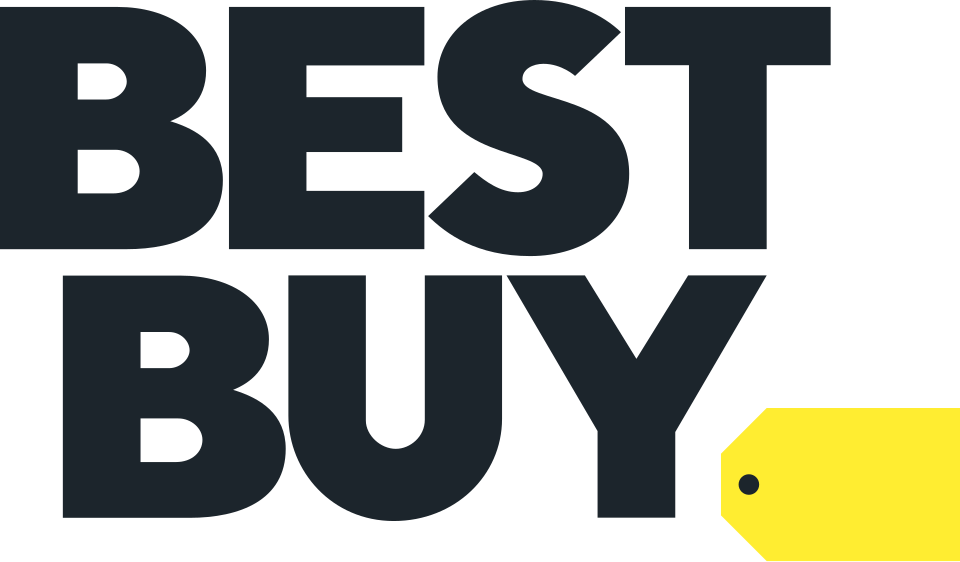
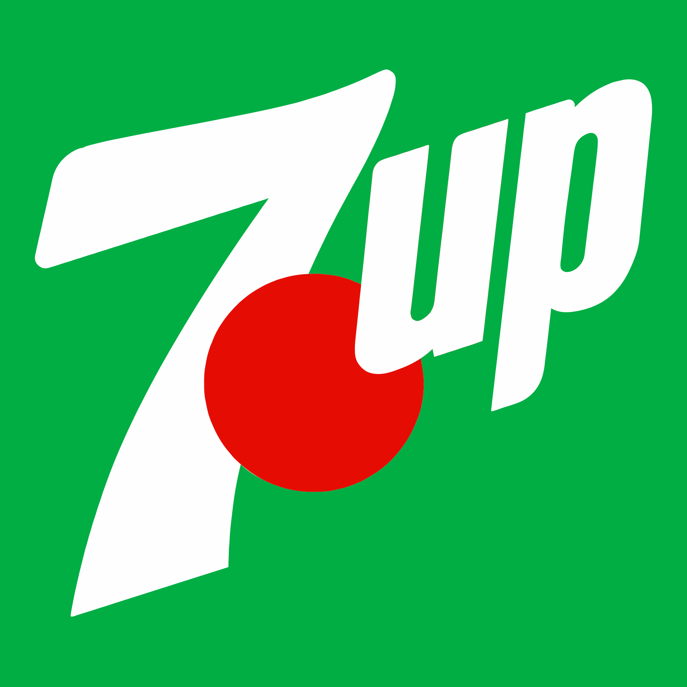
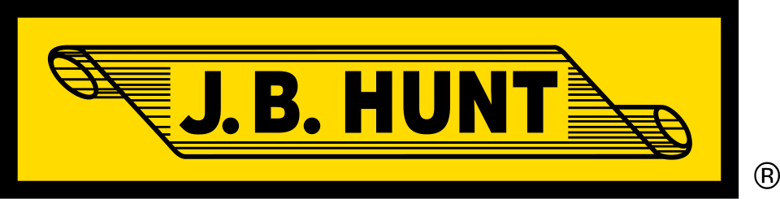
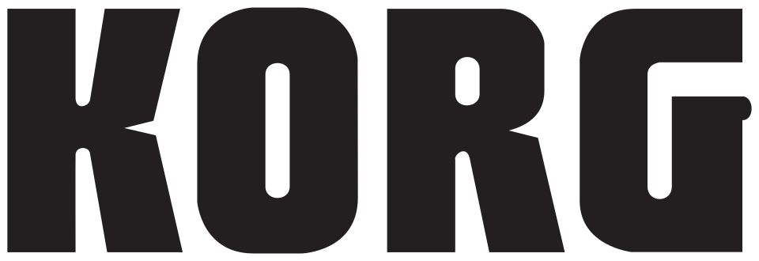
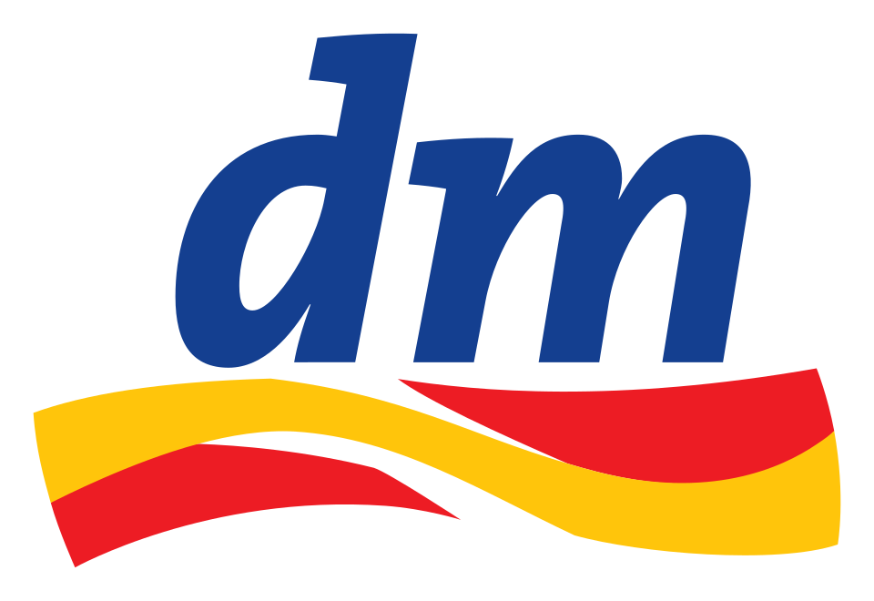
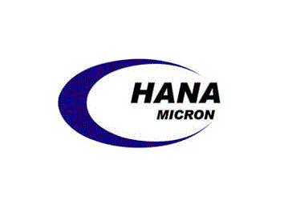
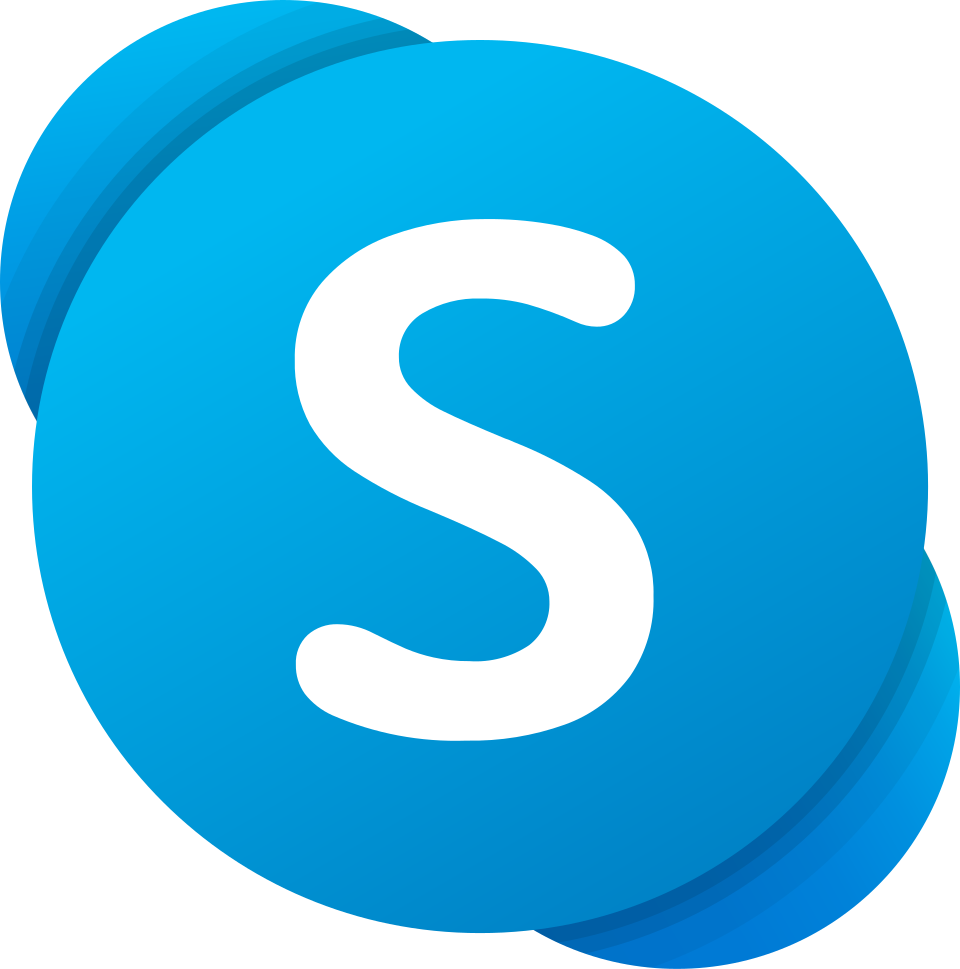
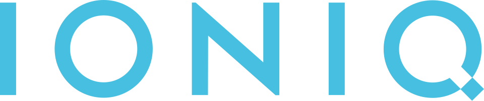

8월에 태어난 브랜드 87곳
8월에 태어난 브랜드 87곳을 탄생일 순으로 모았습니다. 스카이프(Skype), MTV, 마이스페이스(Myspace)가 모두 8월생입니다.
2026년 8월, 주년을 맞는 브랜드
- 170주년
 M&T Bank1856년 8월 29일 탄생
M&T Bank1856년 8월 29일 탄생 - 120주년
 CBRE Group1906년 8월 27일 탄생
CBRE Group1906년 8월 27일 탄생 - 80주년
 스칸디나비아 항공(Scandinavian Airlines)1946년 8월 1일 탄생
스칸디나비아 항공(Scandinavian Airlines)1946년 8월 1일 탄생 - 60주년

베스트 바이(Best Buy)1966년 8월 22일 탄생 - 50주년
 핸즈(Hands)1976년 8월 탄생
핸즈(Hands)1976년 8월 탄생 - 50주년
 에이서(Acer)1976년 8월 1일 탄생
에이서(Acer)1976년 8월 1일 탄생 - 40주년
 Brasserie d'Achouffe1986년 8월 1일 탄생
Brasserie d'Achouffe1986년 8월 1일 탄생 - 40주년
 마이크로-스타 인터내셔널(Micro-Star International)1986년 8월 4일 탄생
마이크로-스타 인터내셔널(Micro-Star International)1986년 8월 4일 탄생
8월 탄생 달력
날짜까지 확인된 74곳을 날짜 칸에 놓았습니다.
- 1다케다 약품공업바이엘+13
- 2앤하이저부시 인베브메르카도 리브레
- 3
- 4마이크로-스타 인터내셔널
- 5엑슨모빌OCI+2
- 6
- 7세븐업교보생명+2
- 8왓어버거
- 9시나 웨이보페이스북 메신저
- 10루브르 박물관레고 그룹+4
- 11
- 12노던 트러스트KCC Corporation+3
- 13쿨에이드
- 14룬드벡Public Storage+1
- 15인도우주연구기구
- 16
- 17ComericaOWSLA
- 18휴매나한국가스공사
- 19엠브라에르로튼 토마토
- 20게임스톱사노피
- 21
- 22캐딜락베스트 바이+1
- 23젝시믹스
- 24파타가스밸브 코퍼레이션
- 25
- 26
- 27CBRE Group
- 28United Parcel Service도요타+4
- 29M&T Bank굳이어+3
- 30자일대우버스
- 31일렉트로 모티브 디젤YIT
8월생 브랜드 연대순
 다케다 약품공업(Takeda Pharmaceutical Company)일본 · 헬스·제약
다케다 약품공업(Takeda Pharmaceutical Company)일본 · 헬스·제약- 루브르 박물관(Louvre Museum)프랑스 · 미디어·엔터테인먼트
- Comerica미국 · 금융
- M&T Bank미국 · 금융
 바이엘(Bayer)독일 · 헬스·제약
바이엘(Bayer)독일 · 헬스·제약 엑슨모빌(ExxonMobil)미국 · 에너지·산업재
엑슨모빌(ExxonMobil)미국 · 에너지·산업재 Marathon Oil미국 · 에너지·산업재
Marathon Oil미국 · 에너지·산업재 노던 트러스트(Northern Trust)미국 · 금융
노던 트러스트(Northern Trust)미국 · 금융 굳이어(Goodyear Tire and Rubber Company)미국 · 모빌리티
굳이어(Goodyear Tire and Rubber Company)미국 · 모빌리티 캐딜락(Cadillac)모빌리티
캐딜락(Cadillac)모빌리티- CBRE Group미국 · 금융
 United Parcel Service미국 · 모빌리티
United Parcel Service미국 · 모빌리티 룬드벡(Lundbeck)덴마크 · 헬스·제약
룬드벡(Lundbeck)덴마크 · 헬스·제약 링컨(Lincoln Motor Company)미국 · 모빌리티
링컨(Lincoln Motor Company)미국 · 모빌리티 일렉트로 모티브 디젤(Electro-Motive Diesel)미국 · 에너지·산업재
일렉트로 모티브 디젤(Electro-Motive Diesel)미국 · 에너지·산업재 쿨에이드(Kool-Aid)식음료
쿨에이드(Kool-Aid)식음료
세븐업(7up)미국 · 브랜드·비즈니스 레고 그룹(The Lego Group)덴마크 · 미디어·엔터테인먼트
레고 그룹(The Lego Group)덴마크 · 미디어·엔터테인먼트- 캐논(Canon Inc.)일본 · 기술·전자
 도요타(Toyota)일본 · 브랜드·비즈니스
도요타(Toyota)일본 · 브랜드·비즈니스 YIT핀란드 · 에너지·산업재
YIT핀란드 · 에너지·산업재- 스칸디나비아 항공(Scandinavian Airlines)스웨덴 · 여행·호스피탈리티
 왓어버거(Whataburger)미국 · 식음료
왓어버거(Whataburger)미국 · 식음료 파타가스(Pataugas)프랑스 · 패션·럭셔리
파타가스(Pataugas)프랑스 · 패션·럭셔리 CJ그룹(CJ Group)한국 · 브랜드·비즈니스
CJ그룹(CJ Group)한국 · 브랜드·비즈니스 교보생명(Kyobo Life Insurance)한국 · 브랜드·비즈니스
교보생명(Kyobo Life Insurance)한국 · 브랜드·비즈니스 KCC Corporation한국 · 브랜드·비즈니스
KCC Corporation한국 · 브랜드·비즈니스 OCI한국 · 브랜드·비즈니스
OCI한국 · 브랜드·비즈니스- 산리오(Sanrio)일본 · 미디어·엔터테인먼트
 IBK기업은행(Industrial Bank of Korea)한국 · 금융
IBK기업은행(Industrial Bank of Korea)한국 · 금융 기업은행(IBK (Industrial Bank of Korea))금융
기업은행(IBK (Industrial Bank of Korea))금융
J. B. Hunt미국 · 모빌리티 휴매나(Humana)미국 · 헬스·제약
휴매나(Humana)미국 · 헬스·제약
코르그(Korg)일본 · 기술·전자 써브웨이(Subway)미국 · 식음료
써브웨이(Subway)미국 · 식음료- 베스트 바이(Best Buy)미국 · 리테일·커머스
 인도우주연구기구(Indian Space Research Organisation)인도 · 기술·전자
인도우주연구기구(Indian Space Research Organisation)인도 · 기술·전자 엠브라에르(Embraer)브라질 · 모빌리티
엠브라에르(Embraer)브라질 · 모빌리티 Public Storage미국 · 홈·라이프스타일
Public Storage미국 · 홈·라이프스타일
디엠-드로게리 마크트(dm-drogerie markt)독일 · 리테일·커머스- 고려아연(Korea Zinc)한국 · 브랜드·비즈니스
 삼성중공업(Samsung Heavy Industries)브랜드·비즈니스
삼성중공업(Samsung Heavy Industries)브랜드·비즈니스- 핸즈(Hands)일본 · 리테일·커머스
- 에이서(Acer)대만 · 기술·전자
 한화에어로스페이스(Hanwha Aerospace)브랜드·비즈니스
한화에어로스페이스(Hanwha Aerospace)브랜드·비즈니스 앤하이저부시 인베브(Anheuser-Busch InBev)벨기에 · 식음료
앤하이저부시 인베브(Anheuser-Busch InBev)벨기에 · 식음료 게임스톱(GameStop)미국 · 리테일·커머스
게임스톱(GameStop)미국 · 리테일·커머스 MTV미국 · 미디어·엔터테인먼트
MTV미국 · 미디어·엔터테인먼트 한국가스공사(Korea Gas Corporation)한국 · 에너지·산업재
한국가스공사(Korea Gas Corporation)한국 · 에너지·산업재- Brasserie d'Achouffe벨기에 · 식음료
- 마이크로-스타 인터내셔널(Micro-Star International)대만 · 기술·전자
 아비드 테크놀로지(Avid Technology)미국 · 미디어·엔터테인먼트
아비드 테크놀로지(Avid Technology)미국 · 미디어·엔터테인먼트 가스프롬(Gazprom)러시아 · 에너지·산업재
가스프롬(Gazprom)러시아 · 에너지·산업재 에프앤에프(F&F)한국 · 패션·럭셔리
에프앤에프(F&F)한국 · 패션·럭셔리 까사미아(Casamia)홈·라이프스타일
까사미아(Casamia)홈·라이프스타일- 레 젤 드 라 모드(Les Ailes de la Mode)패션·럭셔리
 HDFC Bank인도 · 금융
HDFC Bank인도 · 금융 밸브 코퍼레이션(Valve Corporation)미국 · 미디어·엔터테인먼트
밸브 코퍼레이션(Valve Corporation)미국 · 미디어·엔터테인먼트 메르카도 리브레(Mercado Libre)아르헨티나 · 리테일·커머스
메르카도 리브레(Mercado Libre)아르헨티나 · 리테일·커머스- 로튼 토마토(Rotten Tomatoes)미국 · 미디어·엔터테인먼트
 LG디스플레이(LG Display)한국 · 기술·전자
LG디스플레이(LG Display)한국 · 기술·전자 버진 오스트레일리아(Virgin Australia)모빌리티
버진 오스트레일리아(Virgin Australia)모빌리티
하나마이크론(Hana Micron)한국 · 기술·전자 Cencora미국 · 헬스·제약
Cencora미국 · 헬스·제약- 자자일대우버스(Zyle Daewoo Bus)한국 · 모빌리티

스카이프(Skype)기술·전자 마이스페이스(Myspace)미국 · 기술·전자
마이스페이스(Myspace)미국 · 기술·전자 코니카 미놀타(Konica Minolta)일본 · 기술·전자
코니카 미놀타(Konica Minolta)일본 · 기술·전자- 사노피(Sanofi)프랑스 · 헬스·제약
 볼라리스 항공(Volaris)멕시코 · 여행·호스피탈리티
볼라리스 항공(Volaris)멕시코 · 여행·호스피탈리티 큐브엔터테인먼트(Cube Entertainment)한국 · 미디어·엔터테인먼트
큐브엔터테인먼트(Cube Entertainment)한국 · 미디어·엔터테인먼트 Deezer브랜드·비즈니스
Deezer브랜드·비즈니스 에어비앤비(Airbnb)미국 · 여행·호스피탈리티
에어비앤비(Airbnb)미국 · 여행·호스피탈리티- 시시나 웨이보(Weibo)미디어·엔터테인먼트
- 페이스북 메신저(Messenger)기술·전자
 OWSLA미국 · 미디어·엔터테인먼트
OWSLA미국 · 미디어·엔터테인먼트 크라우드스트라이크(CrowdStrike)미국 · 기술·전자
크라우드스트라이크(CrowdStrike)미국 · 기술·전자 NHN Corporation한국 · 기술·전자
NHN Corporation한국 · 기술·전자- 스스튜디오 산타클로스엔터테인먼트(Studio Santa Claus Entertainment)한국 · 미디어·엔터테인먼트
 루멘텀(Lumentum)미국 · 기술·전자
루멘텀(Lumentum)미국 · 기술·전자 자비스앤빌런즈(Jobis and Villains)한국 · 금융
자비스앤빌런즈(Jobis and Villains)한국 · 금융 젝시믹스(XEXYMIX)한국 · 스포츠·아웃도어
젝시믹스(XEXYMIX)한국 · 스포츠·아웃도어 오설록(OSULLOC)한국 · 식음료
오설록(OSULLOC)한국 · 식음료
아이오닉(Ioniq)한국 · 모빌리티 Flyr노르웨이 · 모빌리티
Flyr노르웨이 · 모빌리티 파라마운트 스카이댄스(Paramount Skydance)미국 · 미디어·엔터테인먼트
파라마운트 스카이댄스(Paramount Skydance)미국 · 미디어·엔터테인먼트 스카이댄스(Skydance)미국 · 미디어·엔터테인먼트
스카이댄스(Skydance)미국 · 미디어·엔터테인먼트
8월에 태어난 것으로 확인된 브랜드는 87곳입니다. 가장 오래된 곳은 1781년의 다케다 약품공업(Takeda Pharmaceutical Company), 가장 최근은 2025년의 스카이댄스(Skydance)입니다. 2026년 8월에는 M&T Bank(170주년), CBRE Group(120주년), 스칸디나비아 항공(Scandinavian Airlines)(80주년) 등 12곳이 주년을 맞습니다. 생일이 같은 브랜드도 있습니다. 8월 1일에는 다케다 약품공업(Takeda Pharmaceutical Company)(1781)와 바이엘(Bayer)(1863)와 Marathon Oil(1887), 8월 10일에는 루브르 박물관(Louvre Museum)(1793)와 레고 그룹(The Lego Group)(1932)와 캐논(Canon Inc.)(1937)가 태어났습니다. 설립연도가 확인된 브랜드는 85개이며 가장 오래된 곳은 1849년, 가장 최근은 2025년에 시작했습니다. 시기별로는 1900년 이전 7개, 1900~1949년 13개, 1950~1999년 39개, 2000년 이후 26개입니다. 수록 자료로는 로고 이미지 84개, 로고 변천 자료 6개, 연혁 타임라인 10개를 갖췄습니다. 이 가운데 77개는 공식 웹사이트가 일치하는 위키데이터 개체로 연결해 두었습니다. 날짜는 위키데이터, 위키백과 정보상자, 브랜드 본문 가운데 같은 연월로 확인되는 값만 썼고, 출처끼리 다르면 싣지 않았습니다.